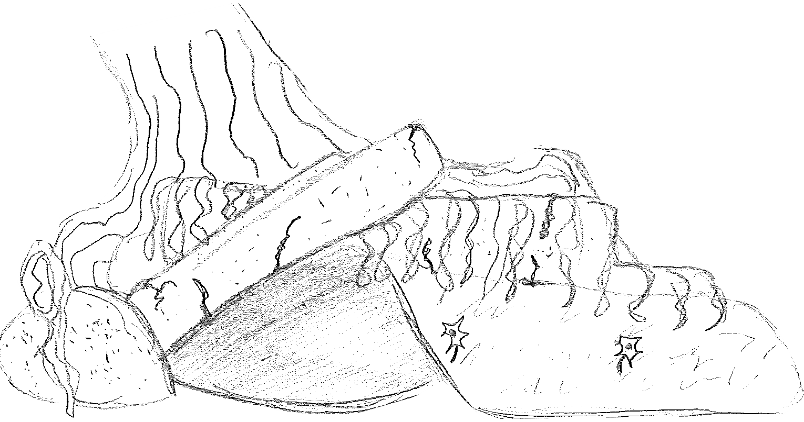
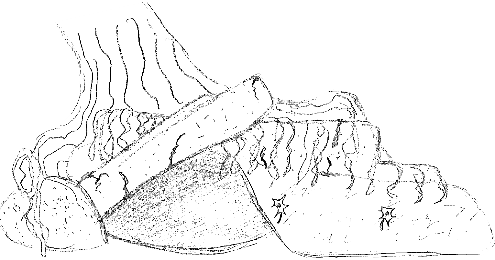

There we go! All better, Zug Zug ended up stiching his wounds and eating some wolf meat he obtained from the last encounter... It appears there's a cluster of tree's ahead of Zug Zug or you can try going back to the Worg's Lair And check to see if their is anything rare in it! You're also ready to fight so what is there to lose?